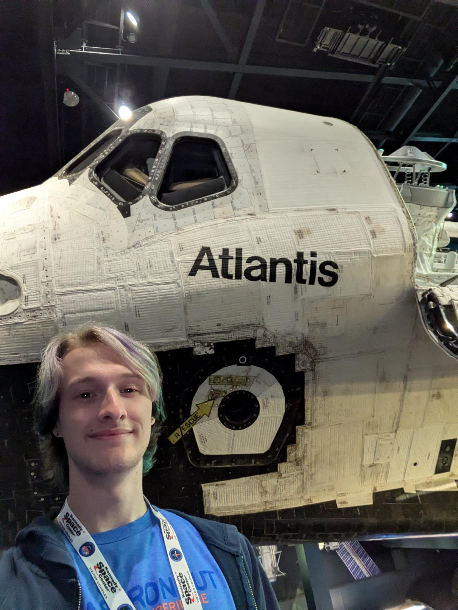
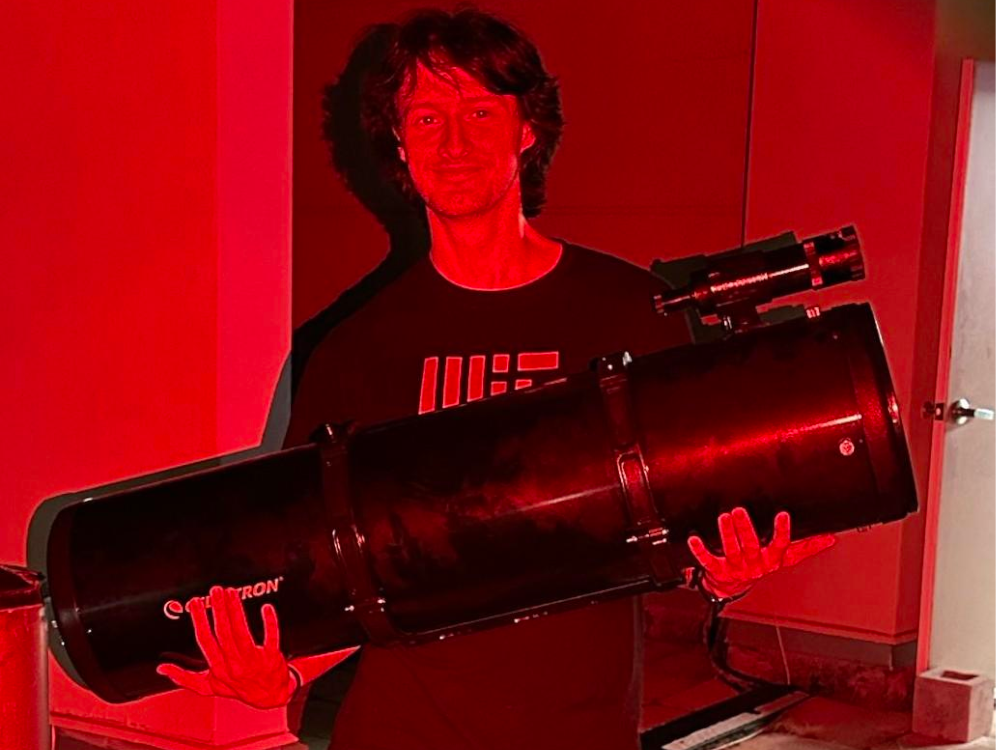
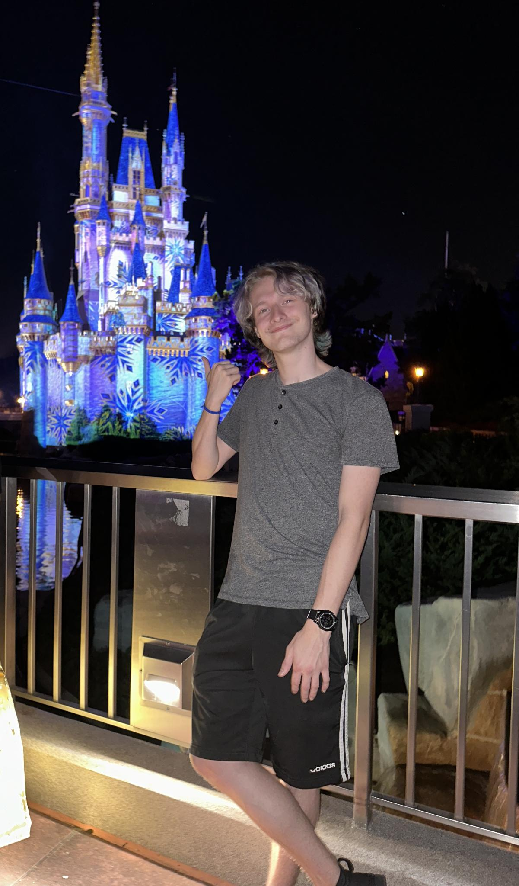
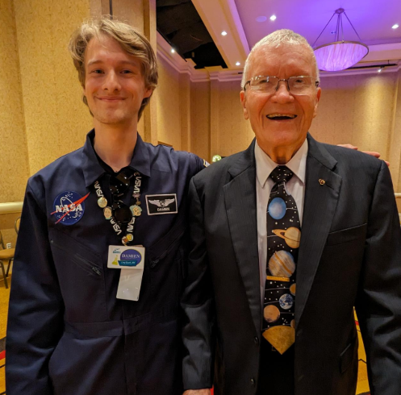
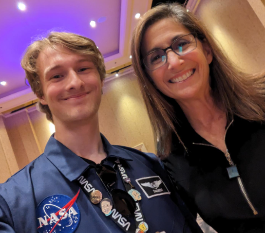
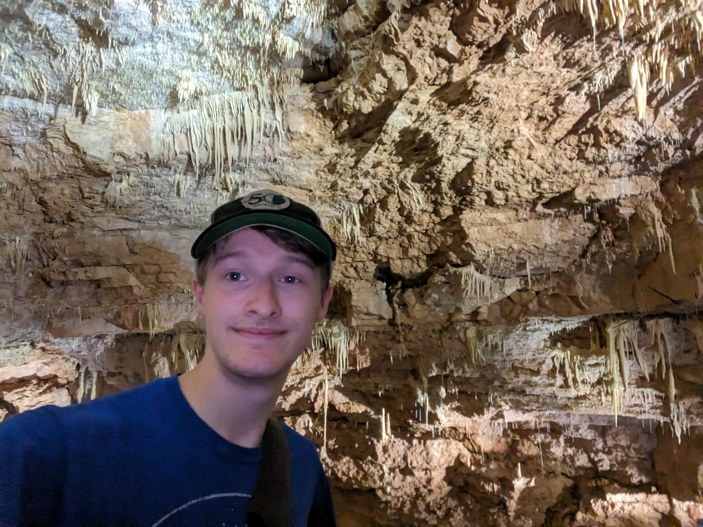
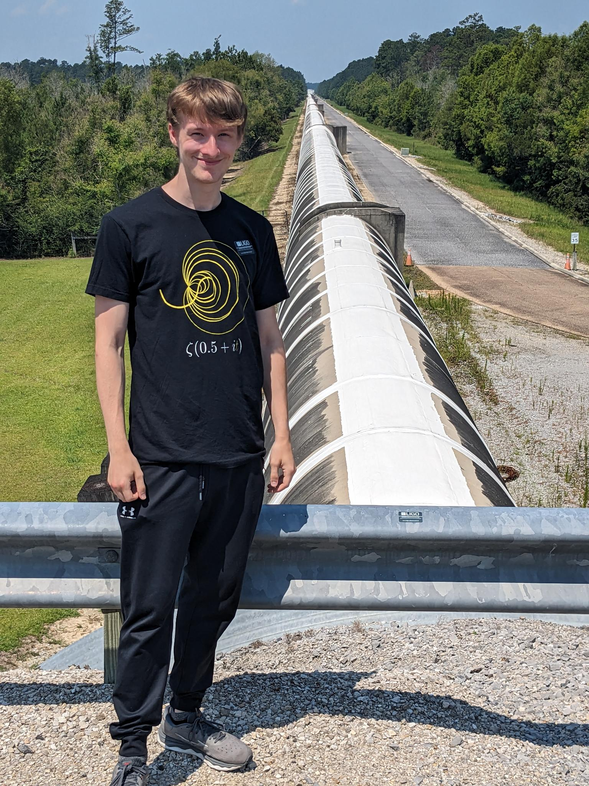

Sitting with Einstein at the Griffith Observatory

Photo op with the Space Shuttle Atlantis at the Kennedy Space Center Visitor Complex

Holding an 8 inch Newtonian telescope at the Ortega observatory

In front of Cinderella's Castle in Disneyworld Florida
Posing with The Michael Mouse 😎

Meeting the Apollo 13 Lunar Module Pilot, Fred Haise

Meeting Space Shuttle astronaut, Nicole Stott
Preparing for the total solar eclipse of April, 2024 in Arkansas
Ready to visit Space Center Houston!
Taking a break in the Houston, Texas Eclectic Menagerie Park

Exploring the Natural Bridge Caverns in San Antonio, Texas

Touring the Laser Interferometer Gravitational Waves Observatory (LIGO) in Livingston, Lousianna